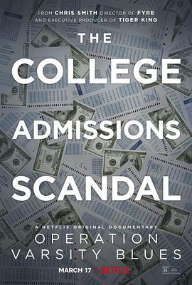

2021年8月
广播发布后不可编辑，所以每条都是那一刻的原话。
2021-08-29 22:32:58
 玩过 迷室4：往逝 The Room 4: Old Sins ★★★★★
玩过 迷室4：往逝 The Room 4: Old Sins ★★★★★
还不错，逐渐有剧情了，期待5
2021-08-26 21:22:49
转发：

2021-08-25 18:33:02

2021-08-24 10:02:18
 想看 攻壳机动队 第一季 / 攻殻機動隊 STAND ALONE COMPLEX
想看 攻壳机动队 第一季 / 攻殻機動隊 STAND ALONE COMPLEX
佛系马克
2021-08-24 09:57:14
 想看 基地 第一季 / Foundation Season 1
想看 基地 第一季 / Foundation Season 1
2021-08-22 19:14:28
 玩过 十三机兵防卫圈 十三機兵防衛圏 ★★★★★
玩过 十三机兵防卫圈 十三機兵防衛圏 ★★★★★
拖了快一年，终于通关了，画风非常喜欢，剧情用抽丝剥茧地呈现出来，机甲战斗直接用指点江山的地图呈现，意外地有趣。科幻的架空设定也是非常棒了，本以为分成5个区（加0区）就没了，结果还有更甚。期待下一作。
2021-08-22 19:08:44
2021-08-21 09:28:35
 在玩 暗黑破坏神2：重制版 Diablo II: Resurrected ★★★★★
在玩 暗黑破坏神2：重制版 Diablo II: Resurrected ★★★★★
完了下beta还不错，真的是高清重置，还是回忆里的体验
2021-08-21 09:26:22
 玩过 胡闹厨房 Overcooked! ★★★★☆
玩过 胡闹厨房 Overcooked! ★★★★☆
orz 太难了这游戏，三星就免了，boss已经很费力了
2021-08-15 22:31:02
 看过 杀人回忆 / 살인의 추억 ★★★★☆
看过 杀人回忆 / 살인의 추억 ★★★★☆
看完寄生虫又看到了年轻的宋康昊，都是演技派的。不过剧情有点意犹未尽
2021-08-14 17:52:49
看过 奇蛋物语 特别篇 / ワンダーエッグ・プライオリティ 特別編 ★★★★☆
解答了正篇中的疑问，这个简直就是《奇蛋物语·解》嘛，挺凄凉的故事害 =，=
2021-08-14 01:18:45
想看 奇蛋物语 特别篇 / ワンダーエッグ・プライオリティ 特別編
我可以了
2021-08-14 01:18:26
 看过 奇蛋物语 / ワンダーエッグ・プライオリティ ★★★★☆
看过 奇蛋物语 / ワンダーエッグ・プライオリティ ★★★★☆
设定相当有意思，非常有女神异闻录的感觉，角色设定也是非常讨喜，很久没看（到这种类型的）番了。结局有点没看懂，arigatou不知道是在说啥。OP ED也是非常好听，不过配图部分好简单啊，直接拍照+PS结束。
2021-08-11 18:51:35
设定相当有意思啊
2021-08-10 11:22:37
 在玩 上行战场 The Ascent ★★★★★
在玩 上行战场 The Ascent ★★★★★
意外的好玩 xgpu nb
2021-08-09 23:19:35
看过 第32届东京奥林匹克运动会 / Tokyo 2021: Games of the XXXII Olympiad ★★★★★
非常特殊，非常精彩，动漫、游戏元素非常丰富，看下来很感动！鬼灭的音乐我怕是在开幕式、重剑、拳击、闭幕式全都听到了，绝赞！
2021-08-07 12:58:51
看过 X特遣队：全员集结 / The Suicide Squad ★★★★☆
真的服气，疯狂抖包袱，然后一巴掌把你扇型，强行带歪剧情走向。不过还是挺不错的爽片。血腥程度超乎想象，以至于Harley逃脱时的花与蝴蝶简直美如画。
2021-08-07 01:09:36
看过 双子杀手 / Gemini Man ★★★★☆
4k60fps看得真爽，剧情中规中矩吧
2021-08-04 17:52:58
 想玩 仙剑奇侠传七
想玩 仙剑奇侠传七
芜湖，只能买steam实体版了，10月22号见
2021-08-03 23:45:06
看过 王国：北方的阿信 / 킹덤：아신전 ★★★★★
netflix厉害啊请到了全智贤，前传算是补完了，感觉还挺满意，期待第三部（看预告貌似第三部还是全智贤？
2021-08-03 12:09:00
全智贤
2021-08-03 12:08:25
2021-08-03 12:08:09
看过 王国 第二季 / 킹덤 시즌2 ★★★★★
海源赵氏总算消灭了，又来了生死草产业链 orz
2021-08-02 20:58:27
赵氏一家简直寄生虫
2021-08-02 20:57:32
看过 王国 第一季 / 킹덤 시즌1 ★★★★★
设定和一般的僵尸片很不一样啊，这次是由上而下的
2021-08-01 23:06:14
看到了裴斗娜！